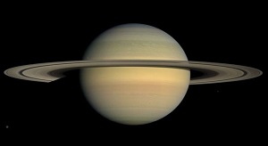
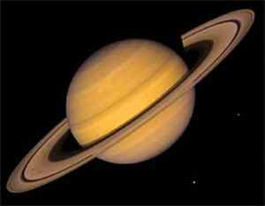

Saturnus merupakan benda langit yang sangat mempesona karena cincincincinnya. Cincin Saturnus kelihatan lebih lebar dibandingkan cincin planet lain, karena terdiri atas ratusan cincin-cincin kecil. Cincin kecil tersusun dari gas beku dan butiran-butiran debu yang diperkirakan merupakan bekas peninggalan dari suatu satelit terdahulu yang telah hancur oleh suatu benturan dengan satelit yang lain. Keindahan Saturnus ini tidak begitu menonjol karena letaknya sangat jauh. Saturnus berjarak 1.428 juta kilometer dari matahari, jarak ini hampir 10 kali jarak bumi-matahari. Saturnus berdiameter sekitar 120.000 kilometer, jadi merupakan planet terbesar kedua setelah Yupiter. Kepadatan planet Saturnus sangat rendah sedemikian hingga planet dahsyat ini bisa mengapung di atas air. Hal ini diperkirakan karena planet Saturnus berisi kebanyakan gas helium dan hidrogen. Planet ini juga dapat menghasilkan panas sendiri akibat sparasi gas. Periode revolusinya 29,5 tahun; sedangkan periode rotasinya sangat cepat yaitu 10,6 jam. Karena kerapatannya rendah dan berotasi cepat menyebabkan Saturnus bentuknya pipih. Saturnus memiliki 21 satelit, yang terbesar yaitu Titan.